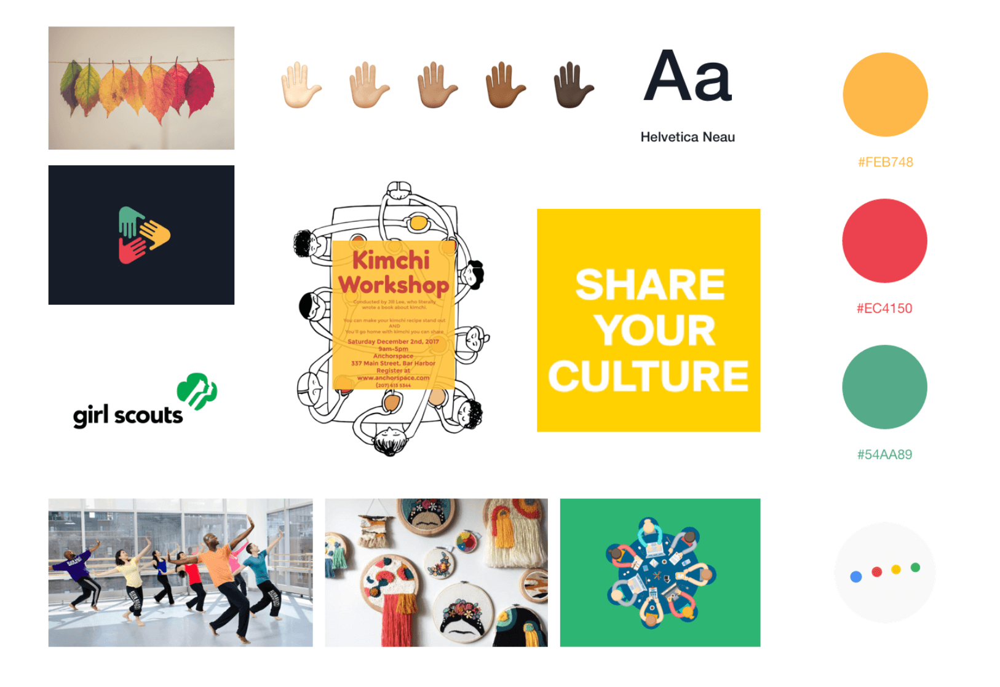
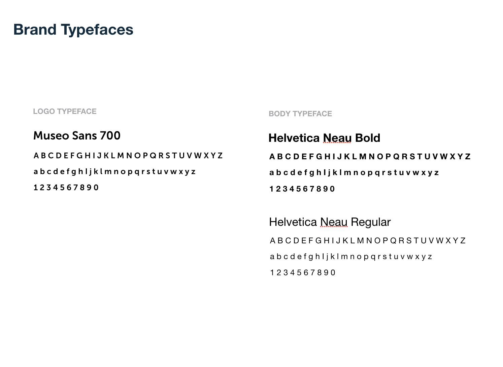

BRAND OVERVIEW
Words to describe Culshare
I listed out words that could describe the overall mood of Culshare brand identity. Then I narrowed down to few words, which best represents Culshare's mission. I chose "friendly" and "enagaing" as the main words to describe how Culshare can be viewed from the public as a brand.

Look and feel of Culshare
Then I gathered representative images that I would want Culshare as a brand to feel like. Since Culshare is an organization that promotes diversity within the community, I wanted to use different shades of colors as the main brand colors. Also, I wanted to use illustrations and photos of people since Culshare is a platform that gathers people for cultural workshops and events.
BRAND GUIDELINES

Cultural patterns
Since Culshare is a platform that people share different culture, I wanted to utilize cultural patterns as part of Culshare's brand identity. These cultural patterns are scalable, and can be added more in the future. I provided an example of how the cultural patterns would look like and how they are applied in the illustration.
WEB DESIGN
I designed an information architecture of Culshare's website. Through the website, community members can not only learn more about what Culshare does as an organization, but also can easily search, browse, and post any cultural workshops and events.
I also created major user task flows of how users interact with the Culshare website. There are two major tasks that users can perform, which are "Joining new workshop/events" and "Opening new workshop/events".
Then I created wireframes of the landing page and the workshop page. This helped me to plan out how the overall layout and structure of the website should look like.
REFLECTION
Designing for corporate brand identity
This was a fun project where I was able to design a corporate identity of the virtual organization "Culshare" from beginning to end. I learned that it is important to keep in mind the mission statement when designing for the brand identity of an organization. I was conscious of promoting the company mission in every choice I make during the process of designing for any brand attributes and components. Through this process, I learned how to create consistent brand components that all work to build upon one corporate identity.